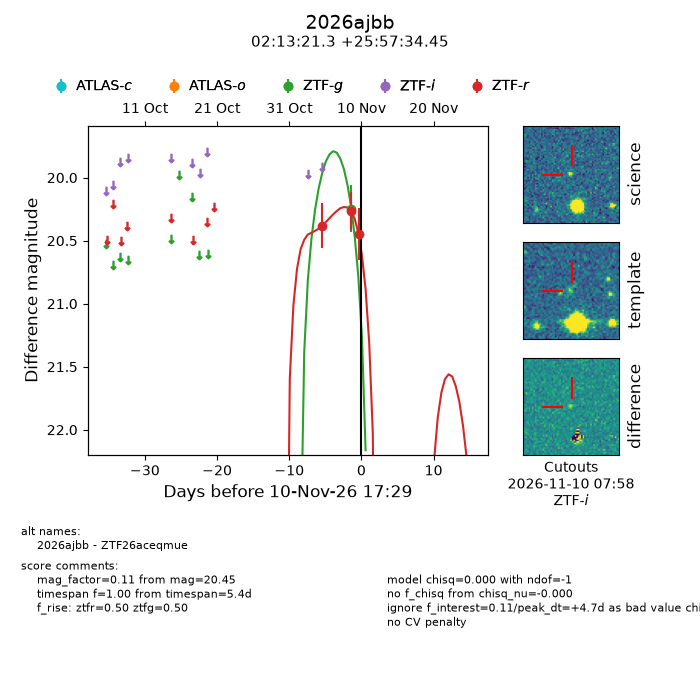
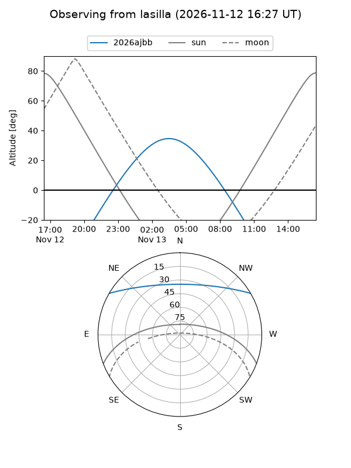
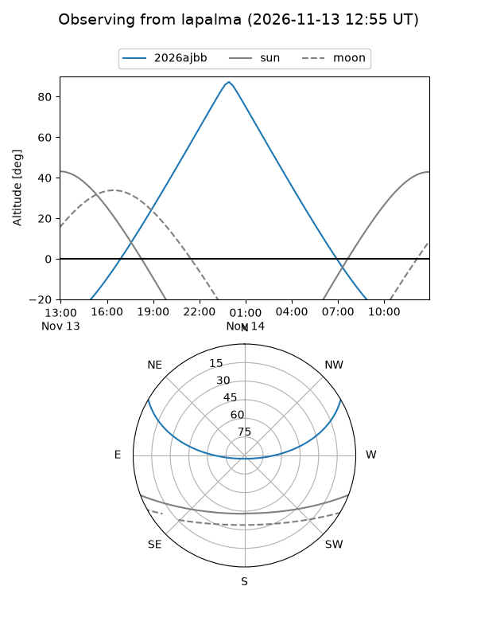
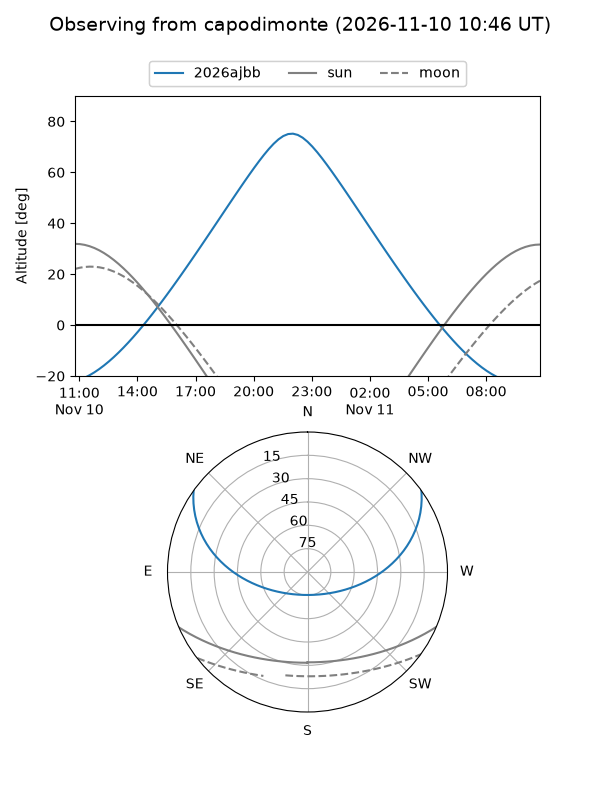
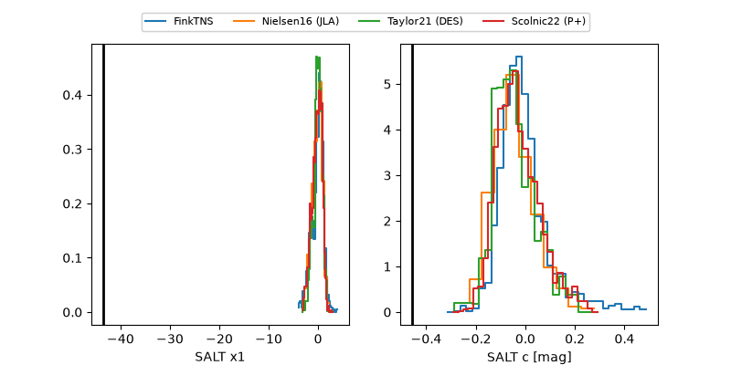

2026ajbb
Target 2026ajbb at 2026-11-10 17:32
Aliases and brokers:
FINK-ZTF: ztf.fink-portal.org/ZTF26aceqmue
Lasair-ZTF: lasair-ztf.lsst.ac.uk/objects/ZTF26aceqmue
ALeRCE-ZTF: alerce.online/object/ZTF26aceqmue
YSE-PZ: ziggy.ucolick.org/yse/transient_detail/2026ajbb
TNS name: wis-tns.org/object/2026ajbb
Direct TNS query: direct search
alt names
ZTF26aceqmue (ztf,fink_ztf)
2026ajbb (tns,yse)
Coordinates:
equatorial (ra, dec) = 33.3389,+25.95957
equatorial (HMS+DMS) = 02:13:21.35,+25:57:34.45
galactic (l, b) = (145.0590,-33.36813)
Flags:
peak dt: +4.7
Photometry:
last ztfg=20.25, ztfr=20.45
1 ztfg, 3 ztfr detections
Lightcurve

Visibility



Additional plots
